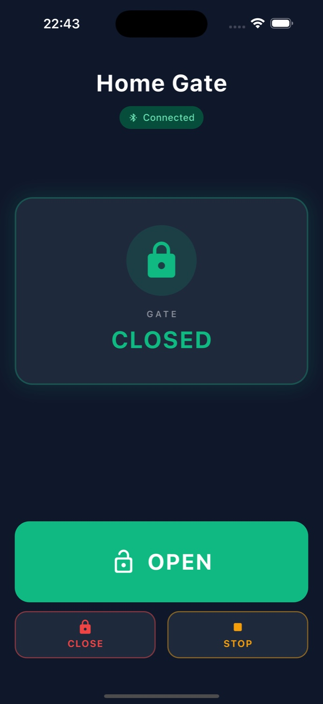
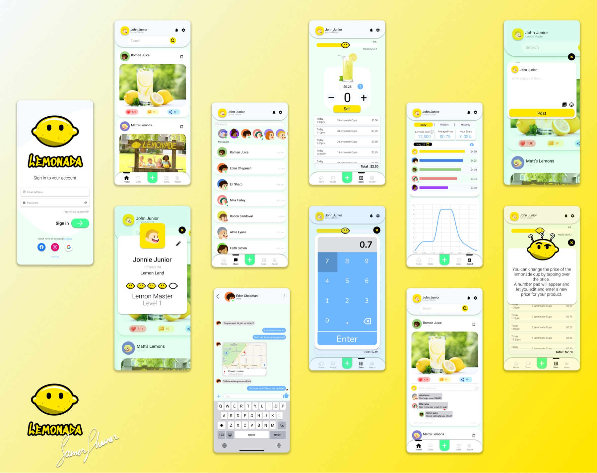
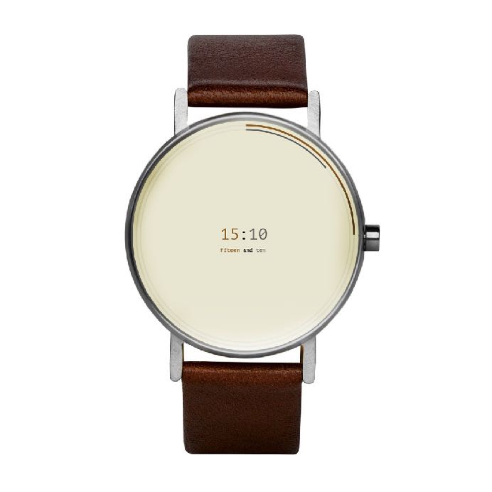
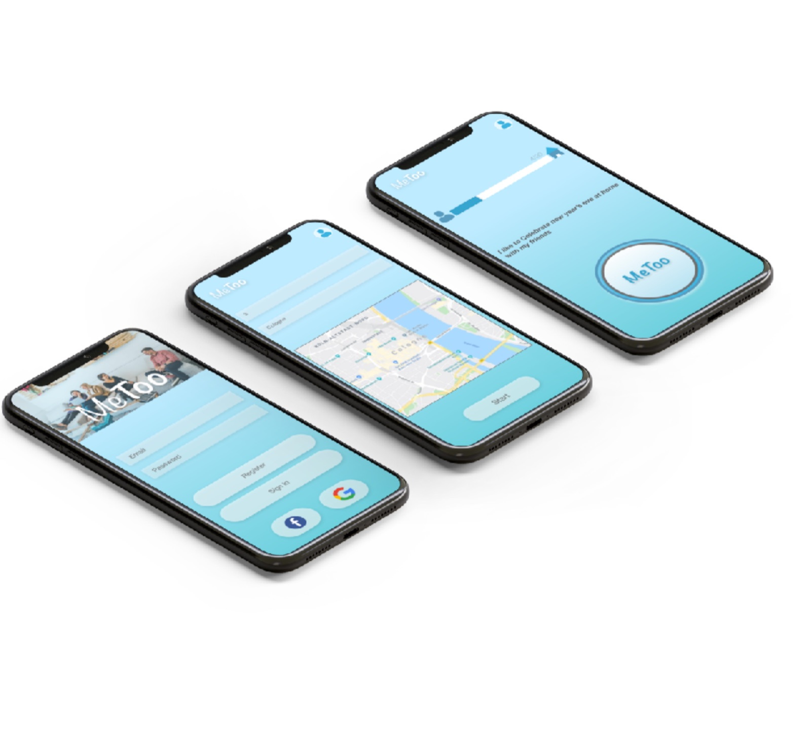
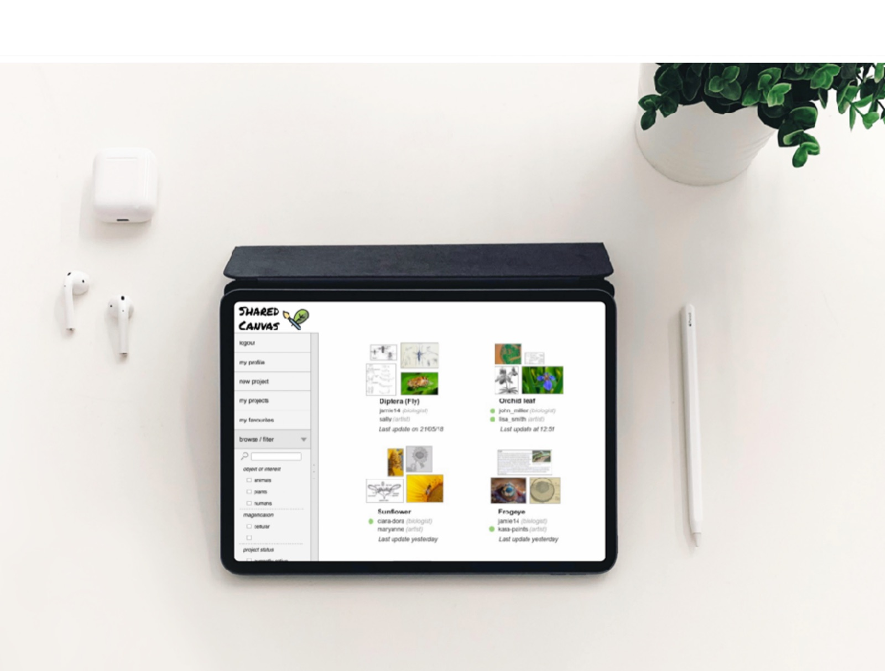
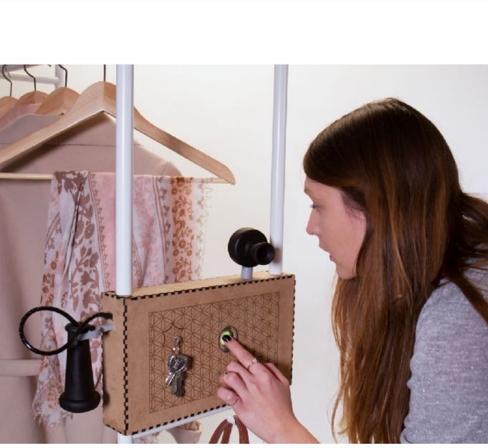
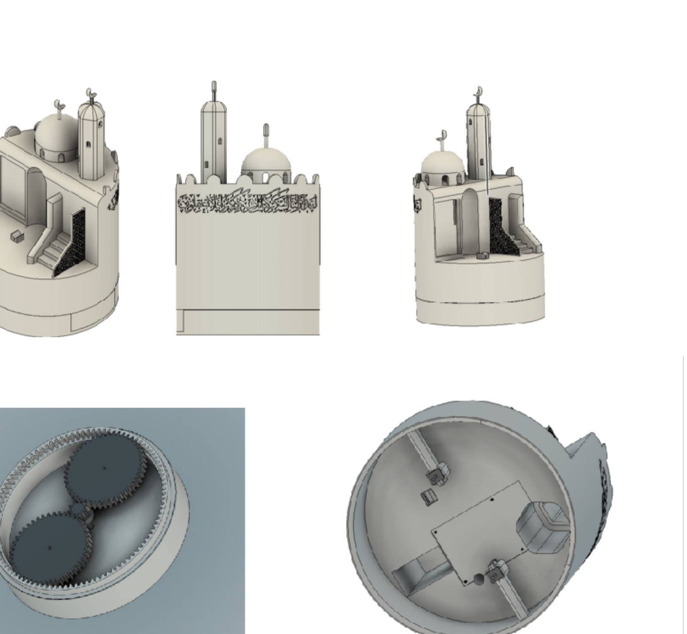

Selected work
14 case studies · research → prototype → product-
01
Home GateA one-tap Bluetooth gate opener for elderly users, shaped by the physics of a metal gate.

-
02
CloveA cluttered seller dashboard, rebuilt around the one decision that matters and verified with eye-tracking.

-
03
NovaidTurning a panicked bystander into a guided first responder, completely hands-free.

-
04
LemonadaTeaching kids real business skills through a sales tool they actually want to open.

-
05
3D Modeling UIPro-grade CAD reimagined for the browser, researched and shipped in one week.

-
06
Glimpses from PalestineReturning a demolished village to the people who remember it, in VR. Published at ACM.

-
07
BabylonA watch that teaches you a new language every time you check the time.

-
08
Castle DefenderA historic site nobody visited, turned into a game played on its own walls.

-
09
AthenaOne conversation, two products: a chatbot residents barely type into, and the dashboard it feeds.

-
10
MeTooCutting the flat-share search down to only the conversations worth having.

-
11
Shared CanvasA shared surface where artists and biologists finally draw on the same page.

-
12
FILOA private message left on the most public object in the home.

-
13
Sensory BoxTwo devices, one quiet object, shipped to full production.

-
14
Religious RobotA robot that helps refugees keep their rituals, designed across two continents.

How the work gets made
One loop, five stationsDiscover
- Vision
- Requirements
- Market research
- UX research
- Priorities
Define
- Use cases
- Personas
- Storyboards
- Experience map
Ideate
- Wireframes
- Interaction
- Sketching
- Usability testing
Prototype
- Interface design
- Interaction
- Motion
- Validation
Implement
- Development
- Deploy
- Usability testing
- Measure
- Optimize
Implement ⟲ iterates back to Ideate. The loop closes as many times as the users demand.
Maker first, designer always
AboutI work where research meets the workbench, collecting and analyzing data with user-centered methods, then building the answer with whatever the idea needs: VR & AR, machine learning, robotics, 3D printing, or a room-sized interactive installation.
I founded Vecbox, the first hackerspace in Palestine, to empower communities through technology, and I’ve carried that hands-on, teach-by-making spirit through every product team since.

- DegreeM.Sc. Human-Computer Interaction
- UniversityUniversität Siegen, Germany
- FoundedVecbox, first hackerspace in Palestine
- NetworkGlobal Innovation Gathering
- TeachesDesign thinking · Interactivity · Critical thinking
Kind words
Collaborators · Clients · CommunityI have had the chance to work with Samer through multiple projects and community initiatives, where he has always been a model for innovation and collaboration. Samer is a leader by nature, with great understanding of technologies and how we interact with them in our daily lives.Dr. Hanna KreitemCollaborator, technology & community projects
Working with him has always been successful, fun and instructive. He is very competent, motivated, innovative and organized, with huge knowledge about technology, history and the current problems in the world. He is able to figure out new and feasible solutions to urgent challenges.Lisa HartbergerProject partner, HCI master studies
Samer has been an active member of the Global Innovation Gathering since the early days of the community’s existence. He has helped shape and grow the GIG network, designing workshops and learning experiences for GIG events such as Maker Faires, re:publica, and GIG Impact Gatherings.Geraldine de BastionFounder, Global Innovation Gathering
I’ve collaborated with Samer on several projects. He was an enthusiastic team member, very well coordinated to work on specific strategies and systems. He is a problem solver and an innovative thinker.Mohammed YaseenLead designer, project collaborator
“Design is the last line of defense between technology and the user.” This quote hit differently today during a session I attended titled “UX and AI: Designing for the Intelligence Age” with the insightful Samer Shawar.Jihan A.UI/UX designer, UX & AI workshop
Thank you for sharing your knowledge and expertise in design thinking. I am truly grateful for the transformative impact it has had on my problem-solving approach, and I am excited to apply these principles in my future endeavors.Siham ShnaweB.Sc. Data Science, Design Thinking workshop
Selected clients & partners: CloveGoethe-InstitutInstitut Français Global Innovation GatheringJHF
Skills, with receipts
Every skill links to the work that proves itResearch & Strategy
Interaction & Interface
Emerging Technology
Certified: “How to Design for Augmented and Virtual Reality.” Daily companions: Figma · Unity · Fusion 360 · Arduino · Processing · MAXQDA · Adobe CC, but the toolkit always follows the problem, never the other way around.
Insights & publications
Peer-reviewed research · Design writingGlimpses from Palestine: Preserving the Inaccessible in VR Technology
Exploring how digital technology can transcend physical boundaries and preserve cultural memory, creating immersive VR experiences that turn abstract historical narratives into tangible, personal journeys.
Read the paper on ACM →Teaching & facilitation
Workshops that build buildersEmpowering Arab Women Entrepreneurs Through Design Thinking
An intensive Design Thinking workshop empowering women innovators to rethink challenges and craft human-centered solutions for their ventures. The full process on real-world challenges: empathy, problem framing, ideation, prototyping, and testing.

UX & AI: Designing for the Intelligence Age
Integrating AI tools and techniques into the design workflow and problem-solving process.

Hardware Design & Prototyping
Physical computing and interactive design principles through hands-on Arduino workshops.

Advanced Design Technologies
Cutting-edge digital tools and techniques that transform design thinking and implementation.
The academic side
Research · Teaching · Community-
Universität Siegen
GermanyM.Sc. Human-Computer Interaction
Graduate training in user-centered research methods, qualitative analysis, and the design of interactive systems. Thesis: a VR application that reconstructs demolished Palestinian villages from archival photographs and maps. Researched, designed, built, and usability-tested end to end, then published at ACM with Aal & Wulf.
Read the thesis case study → -
Siegen × Waseda
Germany / TokyoJoint research, robots for religious & cultural identity
A cross-university research project exploring how robots can help immigrants and refugees integrate into new societies while preserving religious and cultural identity. I designed the 3D model and interaction of the third robot in the collection.
Read the research case study → -
Workshops
& FacilitationDesign thinking, brainstorming, interactivity, critical thinking
I conduct workshops that move teams from divergent to convergent thinking, the same facilitation practice that opens most of my projects, from Babylon’s psychological-needs session to Novaid’s ideation sprints.
-
Community
Ramallah → BerlinVecbox & the Global Innovation Gathering
Founder of Vecbox, the first hackerspace in Palestine, built to empower communities through technology. Active member of the Global Innovation Gathering, a network of grassroots innovators, social entrepreneurs, and makerspace founders.
I’m currently open to new senior roles, innovative projects, or just a good conversation about the future of HCI.

LinkedIn ↗ ·
Medium ↗ ·
www.samershawar.com
Designed & curated by Samer Shawar · © 2026